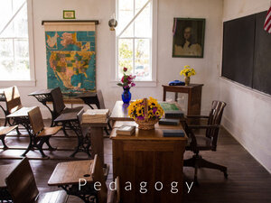

We are challenged to reconsider and innovate our approaches to teaching; learning due to COVID-19. On this page, you will find resources that will help you navigate best practices and tools for creating disruption-resilient courses.
Unlike the Spring 2020 semester, when we simply transferred our courses to remote delivery, we now have the opportunity to do better and get ahead of the curve. We have a brief window—but a window nonetheless—to consider how we might TRANSFORM our classes intentionally to part or fully remote delivery.
And it just got REAL. Now that the College has moved to fully remote instruction for the Fall semester, our preparations will be more demanding than usual. Many of us will be learning Canvas as we are also thinking about how to adapt our courses pedagogically for remote instruction. If that feels like a lot to take on at once, that is because it is! The resources on these pages will help provide something like a “choose-your-own” adventure;road map!
This resource is divided into three parts
PEDAGOGY | TOOLS | The Virtual Conference Room
,.jpg) ,
, .jpg)
Some new favorite sites
Looking for a good icebreaker?Try this automatically generated list of (bizarre) questions for some fun!
Carnegie Mellon University’s Global Communication Center’s Overcoming Unconscious Bias on Your Team
Worried you are giving students too much work when designing asynchronous activities? Try the Coursework Calculator from Rice University.
Wondering how you might construct a “narrative” of your course for students? Check out:Leading with StoryFrom Innovation Studio.
Be inspired and hear what others are doing as they prepare for Fall on the Teaching in Higher Ed podcast.
A great overview of the issues and choices around preparing for Fall in:How I’m Spending My Pandemic Summer Vacation
Driving student engagement is essential to successful teaching and learning.
How to Make Your Teaching More EngagingCHC Faculty:Check out the Remote Teaching Resources section under the Faculty Tab on: my.chc.edu
For additional resources. And there are links below to some favorite sites and articles.